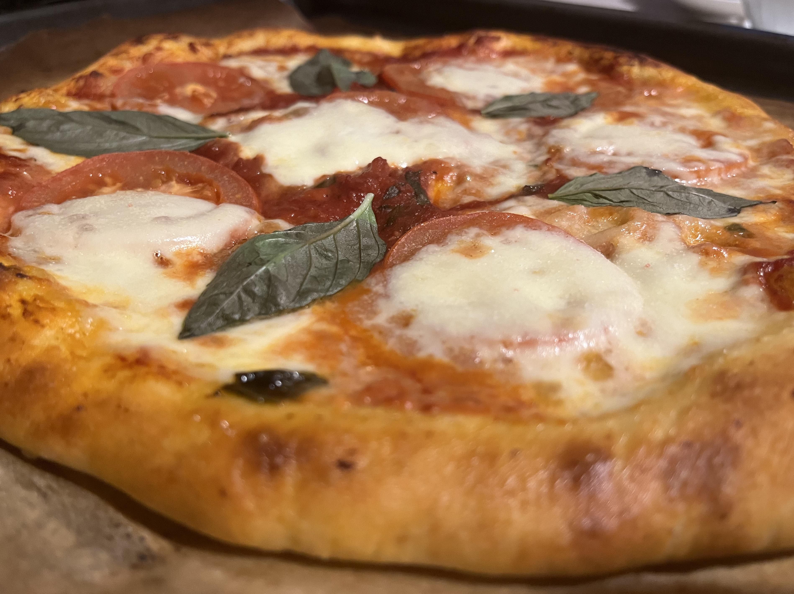

Home
Margherita Pizza

My Favorite Pizza
A popular contemporary legend holds that the archetypal pizza Margherita was invented in June 1889, when the Royal Palace of
commissioned the Neapolitan pizzaiolo Raffaele Esposito to create a pizza in honor of the visiting Queen Margherita.
Of the three different pizzas he created, the queen strongly preferred a pizza swathed in the colors of the Italian flag—red (tomato),
white (mozzarella), and green (basil). Supposedly, this type of pizza was then named after the queen, with an official letter of
recognition from the queen's "head of service" remaining to this day on display in Esposito's shop, now called the Pizzeria Brandi.
research cast doubt on this legend, undermining the authenticity of the letter of recognition, pointing that no media of the period
reported about supposed visit and that both the story and name Margherita were first promoted in the 1930s–1940s.
Ingredients
- All purpose flour - 2 cups
- Sugar - 2tsp
- Salt - 1 tsp
- Instant yeast- 1tsp
- Olive oil - 2tbsp
- Water - 1/2 cup
- Garlic - 4 cloves
- Tomato paste
- Basil leaves
- Black Pepper- 1/4 tsp
- Mozzarella cheese
- Fresh tomatoes
Directions
- In a bowl, pour 2 cups of flour. Add 2tsp of sugar, 1/2 tsp of salt, 1tsp of yeast, and 2 tbsp of olive oil. Mix everything.
- Little by little, add + or - 1/2 cup of water. Knead the dough for about 10 mins.
- Shape your dough like a ball with your hands.
- Pour some olive oil in a bowl and turn dough to coat. Cover your bowl, and leave it in a warm place for about 1-2 hours to double.
- While waiting for the dough to double, make the sauce. In a pan, pour your tomato sauce, roughly chop some basil leaves, and add.
- Grate 4 garlic cloves and add to the sauce. Then, add 1/2 tsp of salt, 1/4 tsp of black pepper and stir.
- Leave it on low to medium temperature to boil for about 15-20mins and leave it to cool down.
- Once dough roughly doubles, divide it into 2 because this recipe is for 2 pizzas. Shape your dough with your hands or a rolling pin.
- Fetch the pizza sauce and spread it on the pizza base excluding the edges.
- Thinly slice some fresh tomatoes and mozzarella cheese.
- Place your tomato slices on the pizza and finish up with the mozzarella slices.
- Preheat your oven to the highest temperature and bake your pizza for 8 minutes, 30 seconds.
- You know your pizza is ready if the base turns brown and rises, and the toppings are cooked. Either wait for your pizza to cool down and garnish it with some basil leaves or garnish it right away.
Notes
- Use a pizza stone to bake your pizza if you have one.
- I recommend that you use your hands to shape your pizza instead of a rolling pin.